WorkBuddy 接入飞书指南
本指南将帮助您在飞书中配置 WorkBuddy 机器人，让您可以通过飞书随时随地远程操控电脑上的 WorkBuddy 完成编程任务。
一、前提条件
在开始之前，请确保您已满足以下条件：
- 已在电脑上安装 WorkBuddy，并开启了 助理 远程控制功能
- 拥有一个飞书企业账号（需要有创建应用的权限）
二、创建飞书应用
1）登录开发者后台
打开浏览器，访问 飞书开放平台，使用企业账号登录后，点击「创建企业自建应用」。

2）填写应用信息
在弹出的创建窗口中，填写以下信息：
| 配置项 | 说明 |
|---|---|
| 应用名称 | 给应用起一个名字，如「WorkBuddy 助手」 |
| 应用描述 | 简单描述应用的功能 |
| 应用图标 | 上传一个应用图标 |
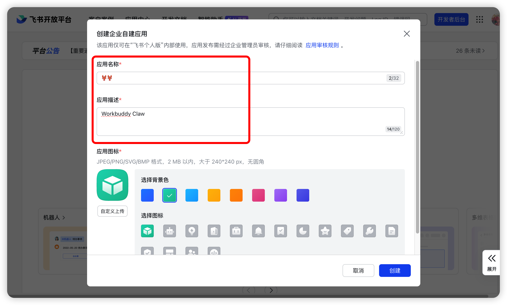
填写完成后，点击「创建」按钮。
3）进入应用详情
应用创建成功后，会自动跳转到应用详情页面。
三、添加机器人能力
在应用详情页的「添加应用能力」区域，找到「机器人」卡片，点击「添加」按钮。

四、配置应用权限
为了让机器人能够正常收发消息，需要为应用添加必要的权限。
1）进入权限管理
在应用详情页左侧菜单中，点击「权限管理」，然后选择「批量导入 / 导出权限」。

2）批量导入权限
在弹出的窗口中：
- 清空输入框中的所有内容
- 将下方的权限列表完整复制并粘贴进去
- 点击「确定新增权限」
需要导入的权限列表：
{
"scopes": {
"tenant": [
"contact:contact.base:readonly",
"docx:document:readonly",
"im:chat:read",
"im:chat:update",
"im:message.group_at_msg:readonly",
"im:message.p2p_msg:readonly",
"im:message.pins:read",
"im:message.pins:write_only",
"im:message.reactions:read",
"im:message.reactions:write_only",
"im:message:readonly",
"im:message:recall",
"im:message:send_as_bot",
"im:message:send_multi_users",
"im:message:send_sys_msg",
"im:message:update",
"im:resource",
"application:application:self_manage",
"cardkit:card:write",
"cardkit:card:read"
],
"user": [
"contact:user.employee_id:readonly",
"offline_access",
"base:app:copy",
"base:field:create",
"base:field:delete",
"base:field:read",
"base:field:update",
"base:record:create",
"base:record:delete",
"base:record:retrieve",
"base:record:update",
"base:table:create",
"base:table:delete",
"base:table:read",
"base:table:update",
"base:view:read",
"base:view:write_only",
"base:app:create",
"base:app:update",
"base:app:read",
"board:whiteboard:node:create",
"board:whiteboard:node:read",
"calendar:calendar:read",
"calendar:calendar.event:create",
"calendar:calendar.event:delete",
"calendar:calendar.event:read",
"calendar:calendar.event:reply",
"calendar:calendar.event:update",
"calendar:calendar.free_busy:read",
"contact:contact.base:readonly",
"contact:user.base:readonly",
"contact:user:search",
"docs:document.comment:create",
"docs:document.comment:read",
"docs:document.comment:update",
"docs:document.media:download",
"docs:document:copy",
"docx:document:create",
"docx:document:readonly",
"docx:document:write_only",
"drive:drive.metadata:readonly",
"drive:file:download",
"drive:file:upload",
"im:chat.members:read",
"im:chat:read",
"im:message",
"im:message.group_msg:get_as_user",
"im:message.p2p_msg:get_as_user",
"im:message:readonly",
"search:docs:read",
"search:message",
"space:document:delete",
"space:document:move",
"space:document:retrieve",
"task:comment:read",
"task:comment:write",
"task:task:read",
"task:task:write",
"task:task:writeonly",
"task:tasklist:read",
"task:tasklist:write",
"wiki:node:copy",
"wiki:node:create",
"wiki:node:move",
"wiki:node:read",
"wiki:node:retrieve",
"wiki:space:read",
"wiki:space:retrieve",
"wiki:space:write_only"
]
}
}
等待几秒钟，页面会显示权限已成功添加。
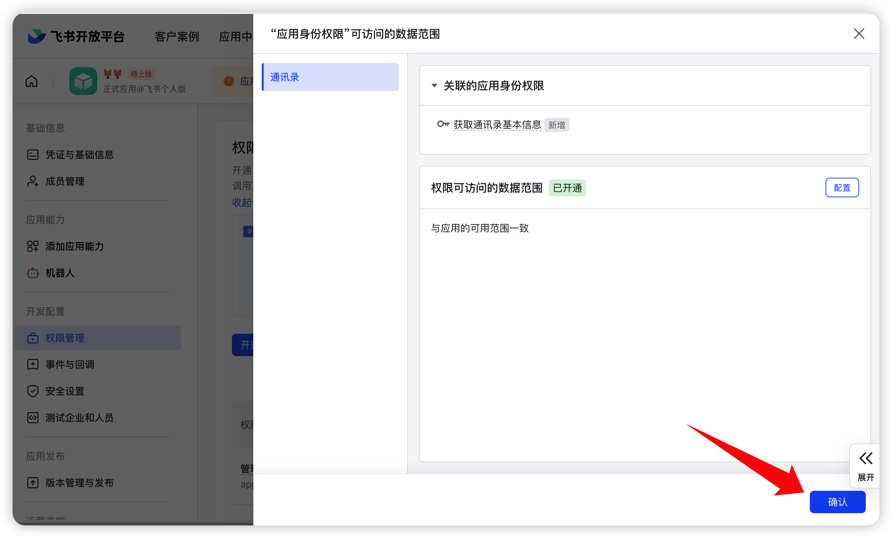
五、获取应用凭证
1）查看凭证信息
在应用详情页左侧菜单中，点击「凭证与基础信息」。
在页面中，您会看到两个重要的凭证信息：
- App ID：应用的唯一标识
- App Secret：应用的密钥（点击查看）
重要
请务必妥善保管 App Secret，不要泄露给他人！

2）获取 Encrypt Key 和 Verification Token
在应用详情页左侧菜单中，点击「事件与回调」，在右侧页面中选择加密策略。
您可以点击刷新按钮自动生成，或点击编辑按钮自定义您的 Encrypt Key 和 Verification Token。
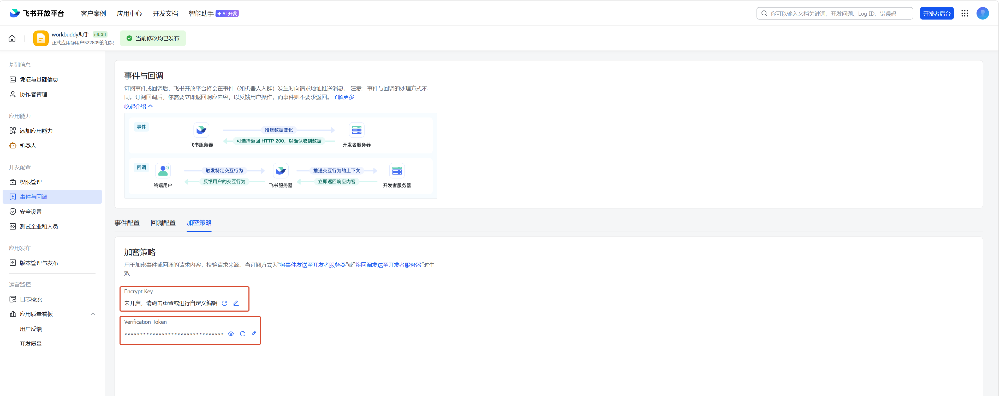
重要
请务必妥善保管 Encrypt Key 和 Verification Token，不要泄露给他人！
六、在 WorkBuddy 中配置飞书
现在，我们需要将凭证配置到 WorkBuddy 中，让它能够与飞书通信。
1）填写凭证
在 WorkBuddy 中，点击助理的设置⚙️图标后进入助理设置，找到飞书集成开始配置。
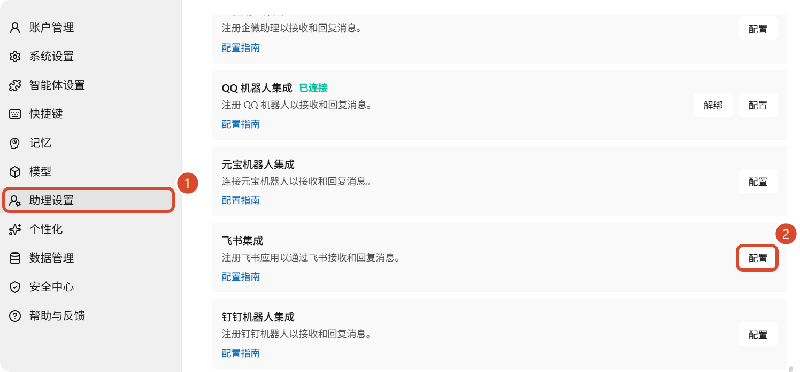
将刚才获取的 App ID、App Secret 以及 Encrypt Key 填入对应的输入框:
- WebSocket 长连接模式 适用于个人/家庭/办公室用户（没有公网 IP）。配置更简单，不需要公网地址，开箱即用。
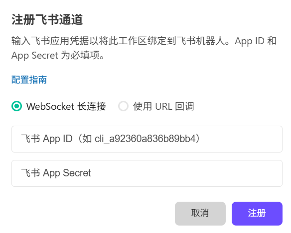
- 使用 URL 回调模式 适用于有服务器、有公网 IP 的用户，需要额外在飞书开放平台填写生成的 Webhook 地址。
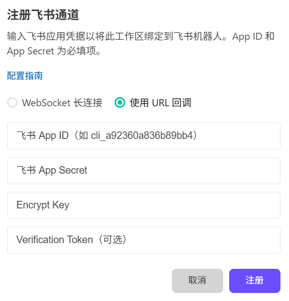
3）注册
- WebSocket 长连接：点击「注册」按钮完成配置，配置成功显示已连接：
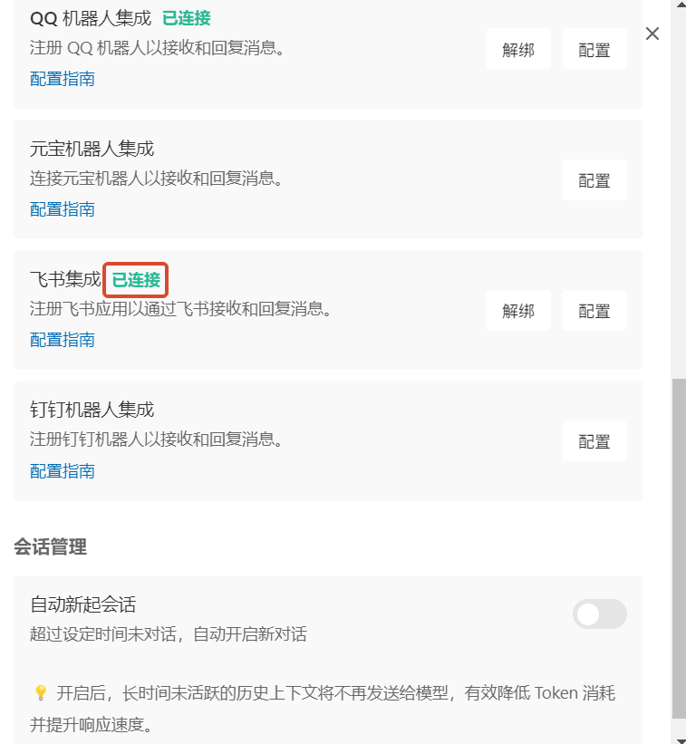
- 使用 URL 回调：点击「注册」按钮系统会生成一个 Webhook 地址，点击复制保存：
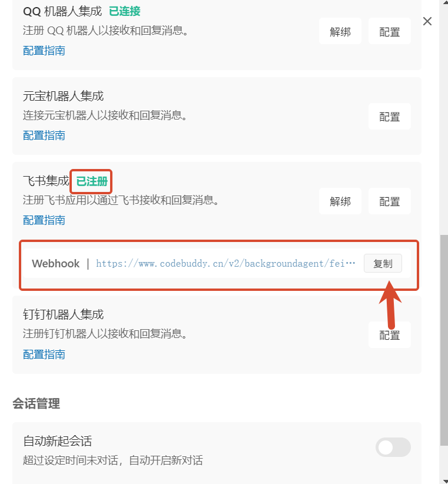
七、配置飞书事件回调
接下来，我们需要告诉飞书将消息发送到哪里。
1）配置事件订阅
返回飞书开放平台，进入应用详情页；在左侧菜单中，点击「事件与回调」。
- WebSocket 长连接：在「订阅方式」中选择「使用长连接接收事件」，点击「验证」：
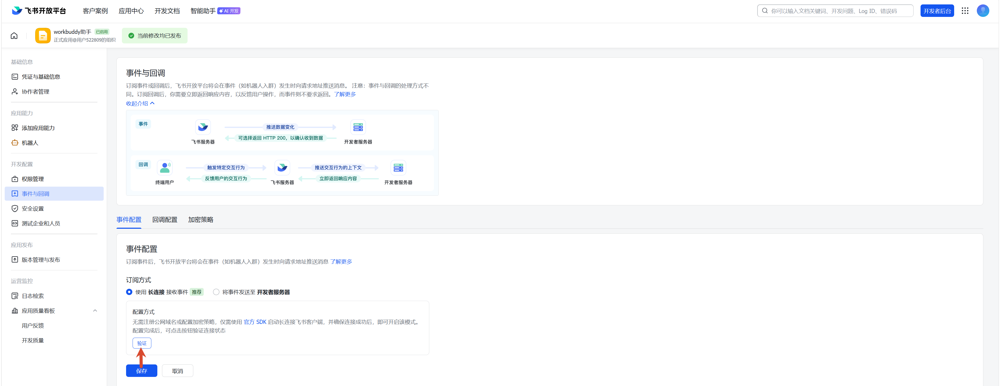
配置成功显示「连接成功」：
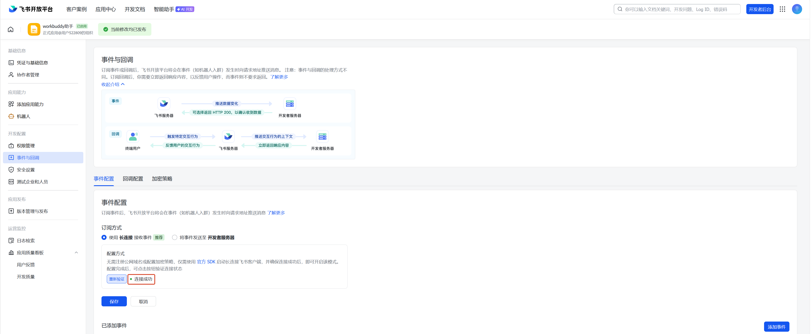
- 使用 URL 回调：在「订阅方式」中选择「将事件发送至开发者服务器」，将刚才复制的 Webhook 地址粘贴到输入框中并点击「保存」：
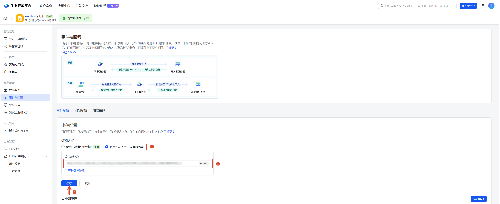
2）添加消息接收事件
在「事件配置」区域，点击「添加事件」，搜索并添加「接收消息」事件。
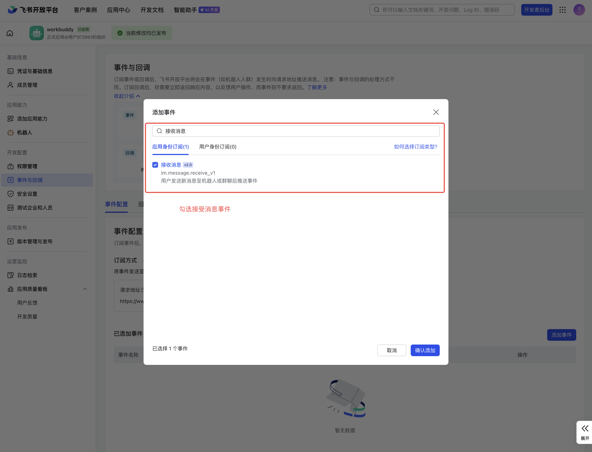
3）配置卡片回调
- 切换到「回调配置」页签
- 搜索「卡片回传交互」
- 点击「确认添加」
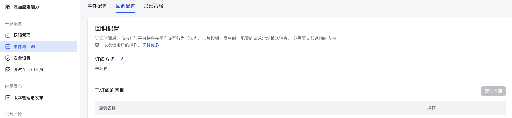

八、发布应用
应用必须发布后才能在飞书中使用。
1）创建版本
点击页面上方的「创建版本」按钮。

在弹出的窗口中填写：
| 配置项 | 示例 |
|---|---|
| 版本号 | 1.0.0 |
| 版本描述 | 首次发布，集成 WorkBuddy |
点击「确定」创建版本。
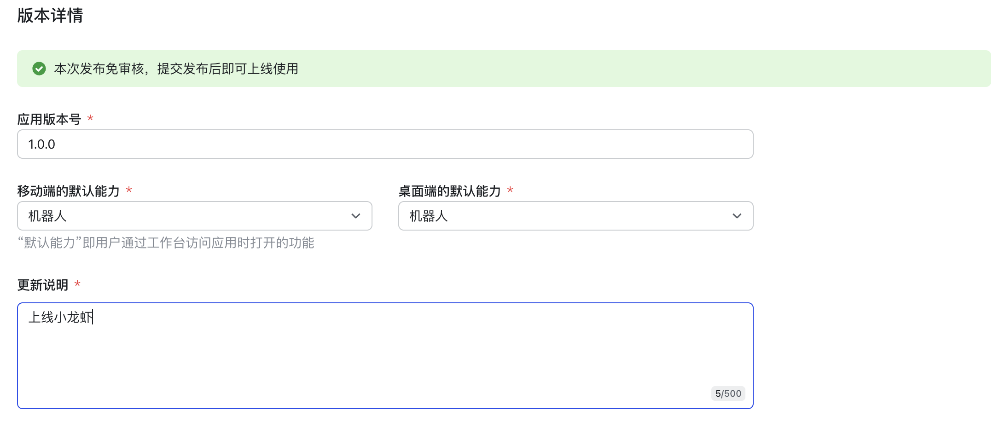
2）发布版本
创建成功后，点击版本右侧的「发布」按钮。
提示
如果您是企业管理员，应用通常会自动审批通过。如果需要审批，请联系您的企业管理员。
九、开始使用
1）找到机器人
在飞书的搜索框中，输入刚才创建的机器人名称进行搜索。
2）开始对话
点击机器人进入对话窗口，或者点击「打开应用」开始使用。
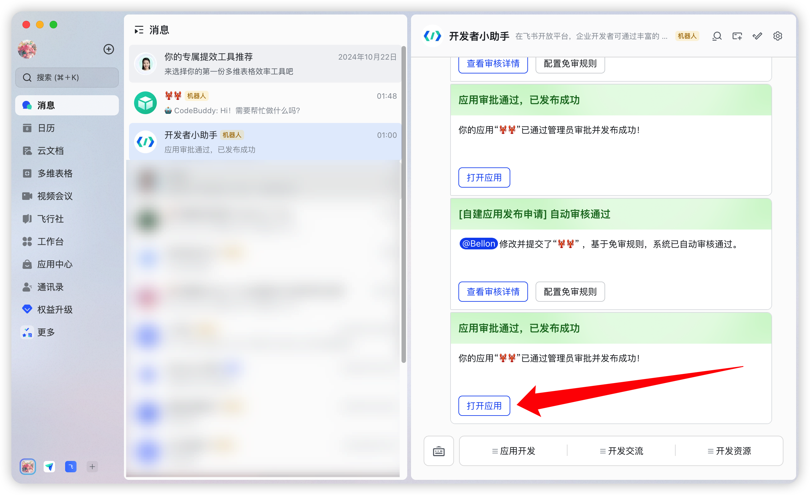
3）发送任务
直接发送您的需求，比如「帮我写一个待办事项应用」。WorkBuddy 会在电脑上自动执行任务，并将结果返回给您。
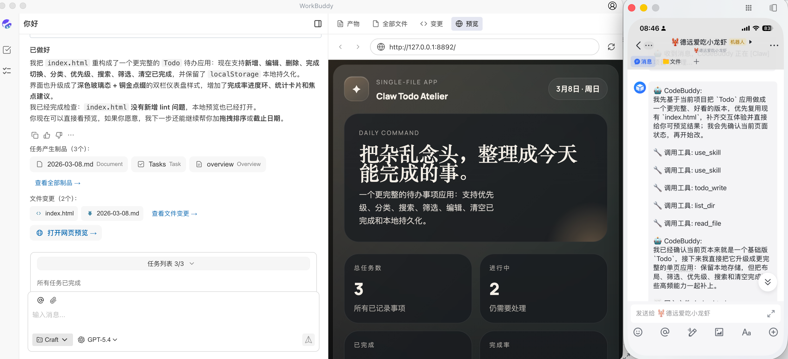
恭喜
您已成功将 WorkBuddy 接入飞书！现在可以通过飞书随时随地远程控制 WorkBuddy 完成各种编程任务了。
十、常见问题
1）机器人没有响应怎么办？
请按以下步骤排查：
- 检查应用状态：确认应用已成功发布
- 检查 WorkBuddy：确保电脑上的 WorkBuddy 正在运行，且 助理 服务已开启
- 核对 Webhook：确认 Webhook 地址配置正确
- 检查权限：确保所有权限都已正确导入
2）收不到消息怎么办？
- 确认已添加「接收消息」事件
- 确认已配置「卡片回传交互」回调
- 检查事件订阅中的 Webhook 地址是否正确